Village clearance: actual paid-layout comparison
bcf8f1bc (335.47s, exit0). Later regular-build guard and water revisions are pending. These are original actual game PNGs, not generated concept pictures.This comparison includes a corrected paid demonstration layout and revised drawing. Walls and four building spots were arranged with normal quotes, purchases and freeMove actions. Loading this code does not automatically rearrange saved paid walls. The old arrangement crossed five tree trunks at nine wall cells.
Both runs declare 50,000 local fake coins and best wave40, then pay for123 walls and progress through five tiers. Level5 ends at11,570 coins. These are local fake fixtures, not a default save or production persistence proof. Both displayed sets use High and drawing density1 after a normal viewport refresh; this is not sustained-performance evidence.
Before source: 7fab8866. Progress after source: bcf8f1bc. Phone images show the existing Working view and remain pannable in the game. Any later Fit overview will be labeled separately rather than substituted for a paired Work image.
Evidence index · Exact sources and limits · Original-byte inventory
Wall level1 — 1280 × 720, Working view

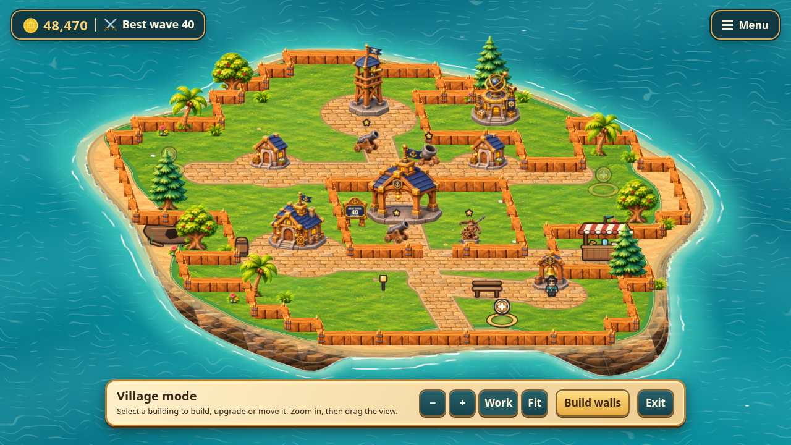

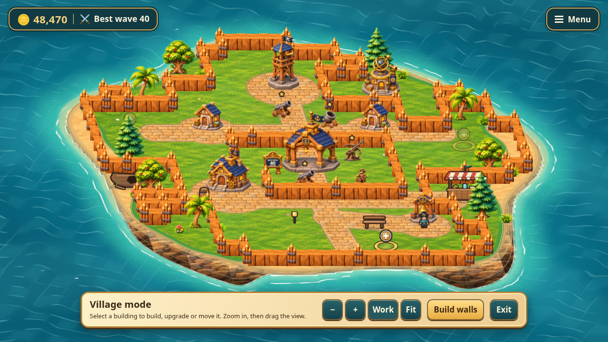
Wall level1 — 375 × 812, Working view

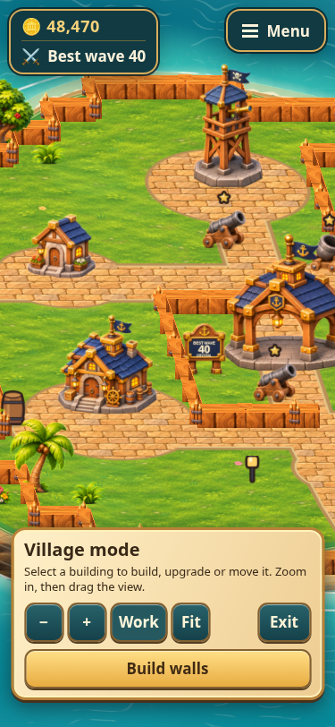

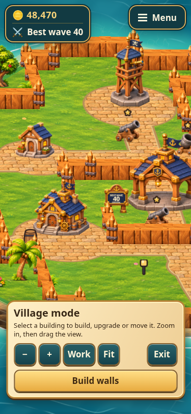
Wall level3 — 1280 × 720, Working view

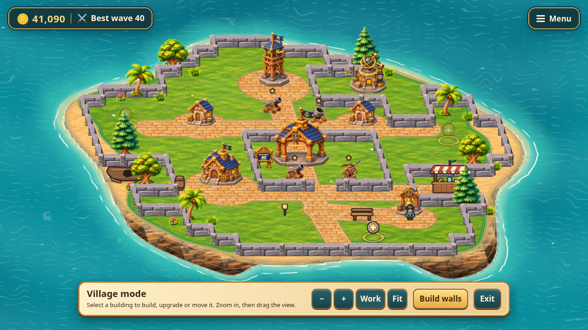

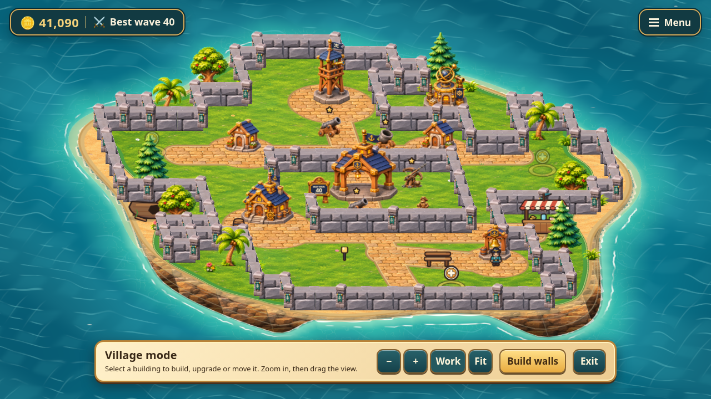
Wall level3 — 375 × 812, Working view

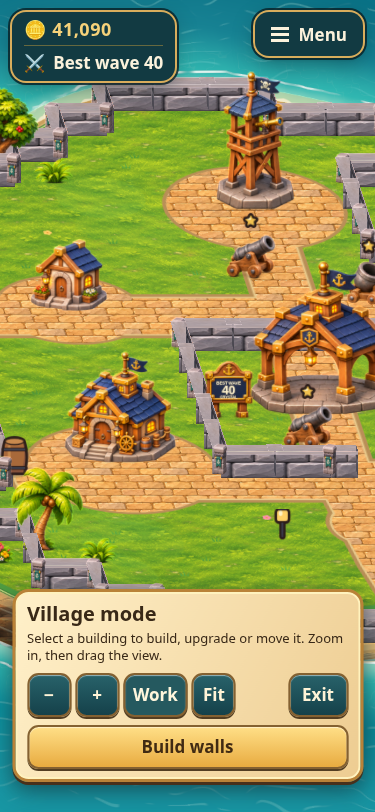

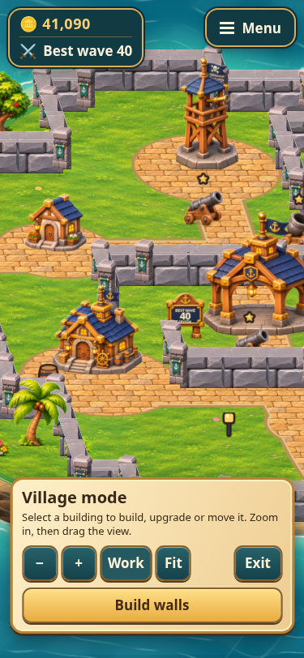
Wall level5 — 1280 × 720, Working view

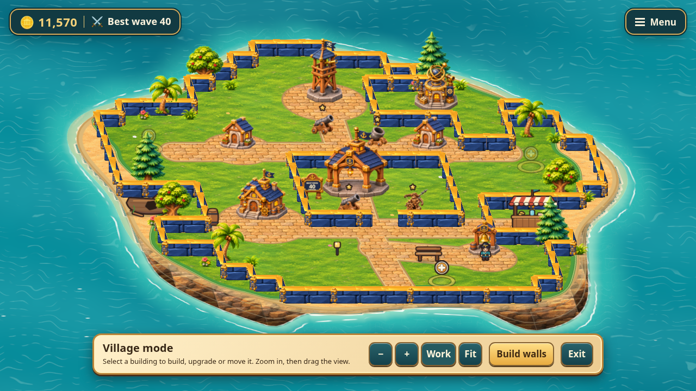

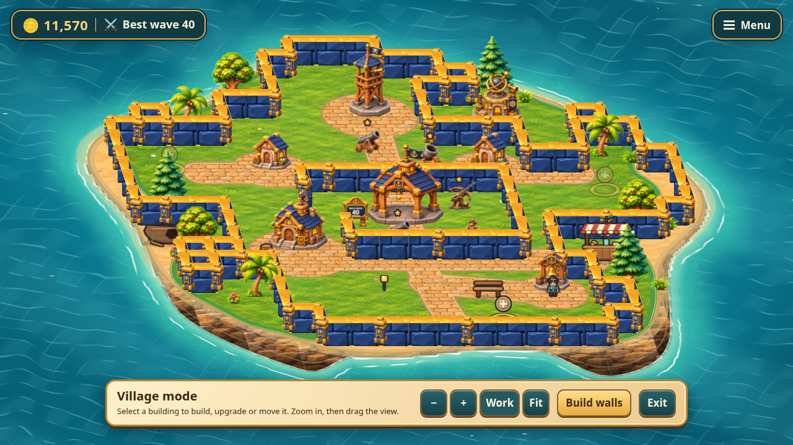
Wall level5 — 375 × 812, Working view

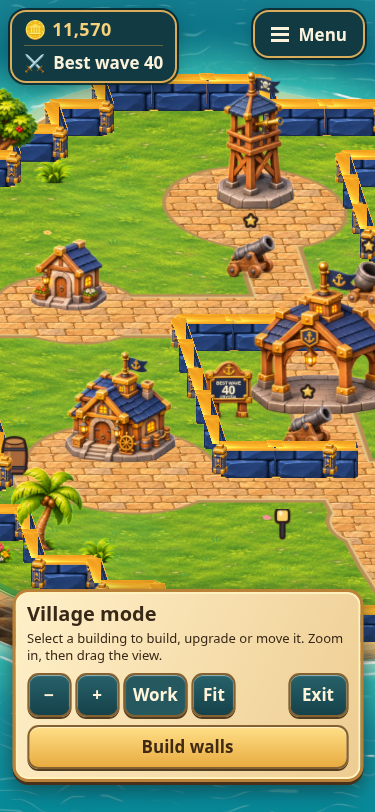

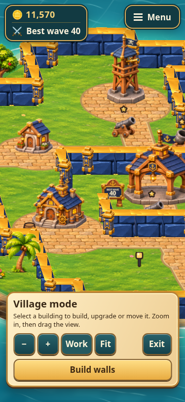
Selected-wall progress views
Desktop selected level5 · Phone selected level5. These are additional progress views, not substituted for the unselected paired frames.


Limits and review
Existing saved conflicts are not automatically repaired. The unsaved barrel moves cosmetically, with matching future-placement reserves; it can intersect a formerly legal old paid cell. Manual review and normal freeMove remain distinct from automatic migration. Full application, later native, physical-device and sustained-performance gates are recorded separately. All PRs remain Draft for explain-back and different-human review.
No official reference images are shipped by this page or game. Approved generated concepts remain in the separate design reference directory.